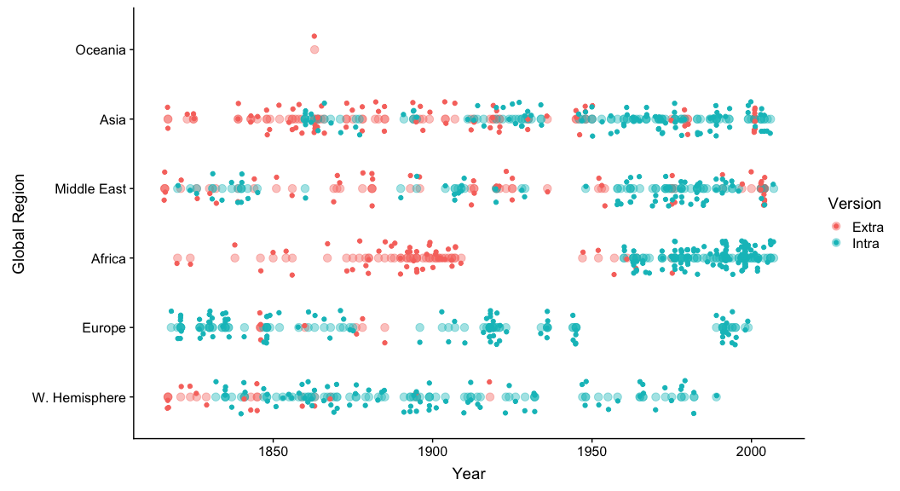
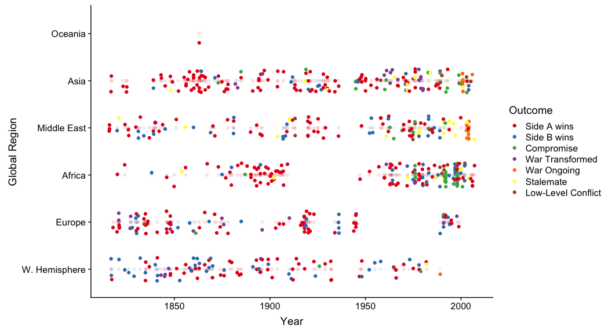

The Correlates of War - Chapter 1
Especially in a university setting, analytics has a tendency to wallow in incomprehendable terminology and chaotic methodology while failing to accomplish its goal; create meaningful and actionable insights. Analysis should be a fun, enjoyable experience that benefits everyone and yields positive results. A neuroscientist can use data analysis to find unique patterns in a functional MRI experiment, a business can uncover untapped efficiencies in their manufacturing process, and a teacher can figure out which methods work the best in connecting with their students. In our case, we're going to make our way through a comprehensive dataset involving called the "Correlates of War Project", a collaboration of university research teams intent on documenting and classifying the root causes of combat and violence. It consists of thirteen main categories (economy, battles, religion, etc.), each containing three or four datasets that focus on the subject. Each dataset provides us a partial picture about the root causes of war, but the ultimate goal of this project is to figure out how to connect this data together, finding new research threads and pushing forward our understanding of conflict in new directions. Recruiting new researchers of all different disciplines to collaborate will unleash new avenues of analysis to both understand our global past, identify major factors of armed conflict, and build analytical models to possibly prevent them. This project is also written in a way that anyone can understand it, provided you take the time to learn introductory 'R' programming and are willing to keep an open mind about how we approach reasearch.
A quick note about myself, which speaks to the intent of this project. I'm not a mathematician, a statistician, or even particularly good at anything that doesn't immediately interest me. But I am good at figuring things out through brute force, then learning my lesson and getting faster and more accurate; and I hope that this helps you in your quest to use 'R' programming and analytics to push the limits in your own discipline. Personally, it's taken me quite some time to realize that the simplicity and order that I apply to my own life translates well into the art of presentation and infomatics. Crafting a story around information is an essential skill for the future. As artificial intelligence, neural networks and enhanced robotics get closer to mimicking human abilities, we all have to build our own humanity-based paths that a computer program won't be able to easily follow. Our school system is letting the vast majority of children down by simply putting them through a checklist of uninspired courses and making education vague enough that they just follow along until they can get through it. Starting with this project, I aim to provide an easily accessible resource that teaches the beauty of information, crafting a story around it and providing a tunnel into the next academic adventure. The beauty of 'R' and 'javascript' is that it is all open-source, so if you have access to a computer and the internet, you can follow along at no cost. In the future, I'd like to see many different connections between projects that constantly learn and improve together.
I've went through many guided courses and datasets, and they have been instrumental in improving my skills. However, there comes a time that you need to let go of the pool-wall and figure out that you can swim perfectly fine. This is a very comprehensive, long-term project where many people can contribute and make a difference, not only in our own skills, but in understanding the world around us. After all, that's the point of data analysis, informatics, data science, statistical programming, information technology, whatever you want to call it; let's make an impact in our understanding of the human condition, and perhaps find some avenues to improve the way society addresses conflict.
So here we go.
Figure Out Where Your Skills are
I plan to use the statistical programming language "R" for this project, spending time to organize the information so it is relevant, useful and interesting, then delve into statistical modeling and predictive analysis to see if there are some hidden insights in the data. I use "R" simply because it was my first programming language and my statistics courses in grad school used it. I figured that I already went through the hell of understanding how it worked, so I've spent a considerable amount of time in the quest to build an expertise in the language. While it might not seem like it initially, the benefits of learning 'R' dramatically outweigh the steep learning curve involved. It has a rapidly developing ecosystem of packages to explore, the visualization tools are incredibly impressive, and use rate is strong. You can do anything from basic data exploration to developing machine learning models. It's also completely free to use, and has applications in industry. However, I should note that "R" is not very intuitive, and I wouldn't start on your own without going through some resources. If you're a beginner, there are some very good resources that have helped me immensely.
- DataCamp - Perhaps the best resource for taking you step-by-step through the intricacies of using "R" and "Python", in addition to numerous topics. The best option is to go through their "Data Analyst" career track, which guides you through a set of well-prepared courses, incorporating hundreds of examples and case studies. After that, follow along any track that suits your interest, or expand into Python. They are continually adding courses and, in my opinion, strip the unnecessary complexity out of 'R' programming so you can learn quickly and effectively.
- R for Data Science - This book by Hadley Wickham and Garrett Grolemund goes in-depth on some very interesting projects and opportunities in Data Science using R. Highly recommended, gives a broad understanding of not just using the base 'R' packages, but leveraging the power of different packages.
- Statistics: An Introduction Using R - Michael Crawley - The first two resources will improve your R skills across the board, this book uses interesting scientific datasets to take you through a years worth of college-level statistics. Absolutely essential to understand the principles and mathematics behind what a data scientist has to do in their job, teaching both the theory and 'R' skills at the same time.
There are many other worthy resources in R, but these three strip out the complexity and get you working hands-on immediately. Start with these, and once you get comfortable with 'R', exploratory data analysis and statistics principles, find resources and topics that are interesting to you. In general, universities have a very poor track record of teaching 'R' and the art of exploratory data analysis (EDA), instead focusing on principles and theory; while this isn't necessarily a bad thing, there is a disconnect between students that can understand the theory and those that can set the data up correctly and apply statistical principles appropriately.
Let's Begin
We have to begin somewhere, so let's pick some interesting data. In the rare event that you have a codebook or guide associated with the data, make sure you read it. For every minute you spend working to understand the data, you'll save 10 minutes down the line when you try to manipulate it. If it's raw, uncoded data, you're on your own, and understanding it will likely take up a sizable amount of time. Fortunately, we have access to the codebooks for this project, and while they are somewhat disjointed, they still provide us with what we need to know. We will begin with the datasets involving 'extrastate' wars (a conflict where a state actor fights a non-state actor outside of their geographic domain) and 'intrastate' wars (a conflict within a state, or amongst non-state actors close by).
Many wars are ambiguous to qualify, as you will see within this data. For instance, how would you categorize Vietnam? There are traits of insurgency, there are traits of large state actors fighting directly, large states fighting non-state actors, non-governmental actors fighting other non-governmental actors, etc. Wars are chaotic, and this project understands the challenges inherent with examining root causes of conflict. In fact, there are many parts in this data that I would challenge and request updates to. If you're an amateur historian, in an academic department, or even teach history at the high-school level, this would be a fun project to mobilize some dedicated people to research these conflicts, improve sources and learn quite a bit while doing it. Analytics is never finished; it's an iterative process where you are continually making improvements, not just to the data and your process, but to your own knowledge.
- Note: You're welcome to follow along no matter your skill level, but if you are not familiar with "R", I suggest going through the resources discussed earlier. You will better appreciate the intricacies of this project, and will be able to follow along on your own.
Libraries and Data
The first step, which you will see in the code below, is to load the packages that we will be using along the way. For this chapter, we will not delve too much into the process, but just make note that 'packages' are sets of functions and data that improve our ability to load the data and do some immediate cleanup, and libraries are built as after we install the package into each session. This is done in a two-step process, where we first download the package, which only has to be done one time. Afterwards, we have to load the library in each 'R' session we open. Because we want to make sure that anyone using this script has the same setup, we create a variable 'packages' that contains the packages we will be using. We then write a simple function that tests whether the package is installed; if it is, then load the library, if not, then install and then load the library. Don't worry too much about this type of function at this point. We will discuss the functions as they are used, but the most important one for my projects is 'tidyverse' (which contains 'dplyr', 'readr', 'purrr' and a few others).
"extra" corresponds to the extrastate dataset, while "intra" is for the intrastate dataset. We will read them in as local .csv files through the "readr" package (you will have to tell "R" which packages you intend to use, which is seen under our "libraries" section at the top. Because the intent is to teach "R" in addition to research methodology, all the code is written in the beige chunks, while output is below that.
packages <- c("tidyverse",
"forcats",
"knitr",
"stringr",
"scales",
"kableExtra",
"formatR",
"gridExtra",
"cowplot",
"RCurl")
package.check <- lapply(packages, FUN = function(x) {
if (!require(x, character.only = TRUE)) {
install.packages(x, dependencies = TRUE)
library(x, character.only = TRUE)
}
})
Let's have a look at the two datasets independently using the "glimpse" function. \pagebreak
# Add Extra and Inter-territorial wars
extra <- read_csv("https://raw.githubusercontent.com/ghidora77/Correlates-of-War/master/01_Data/01_Raw/Extra-StateWarData_v4.0.csv")
intra <- read_csv("https://raw.githubusercontent.com/ghidora77/Correlates-of-War/master/01_Data/01_Raw/Intra-StateWarData_v4.1.csv")
glimpse(extra)
## Observations: 198
## Variables: 28
## $ WarNum <dbl> 300, 300, 301, 302, 303, 304, 305, 306, 307, 308,…
## $ WarName <chr> "Allied Bombardment of Algiers", "Allied Bombardm…
## $ WarType <dbl> 3, 3, 3, 2, 2, 2, 2, 2, 3, 2, 3, 3, 3, 2, 2, 2, 3…
## $ ccode1 <dbl> 210, 200, 640, 230, 230, 230, 200, 200, 640, 230,…
## $ SideA <chr> "Netherlands", "United Kingdom", "Ottoman Empire"…
## $ ccode2 <dbl> -8, -8, -8, -8, -8, -8, -8, -8, -8, -8, -8, -8, -…
## $ SideB <chr> "-8", "Algeria", "Saudi Wahhabis", "San Martin re…
## $ StartMonth1 <dbl> 8, 8, 9, 1, 4, 8, 10, 11, -9, 4, 8, 9, 1, 2, 7, 1…
## $ StartDay1 <dbl> 26, 26, -9, 9, 11, 15, -9, 6, -9, 28, -9, 24, 20,…
## $ StartYear1 <dbl> 1816, 1816, 1816, 1817, 1817, 1817, 1817, 1817, 1…
## $ EndMonth1 <dbl> 8, 8, 9, 4, 8, 1, 11, 6, 6, 5, 5, 2, 8, 4, 3, 1, …
## $ EndDay1 <dbl> 30, 30, 11, 5, 10, 1, 26, 3, -9, 24, -9, 24, 7, 2…
## $ EndYear1 <dbl> 1816, 1816, 1818, 1818, 1819, 1818, 1818, 1818, 1…
## $ StartMonth2 <dbl> -8, -8, -8, -8, -8, -8, -8, -8, -8, -8, -8, -8, -…
## $ StartDay2 <dbl> -8, -8, -8, -8, -8, -8, -8, -8, -8, -8, -8, -8, -…
## $ StartYear2 <dbl> -8, -8, -8, -8, -8, -8, -8, -8, -8, -8, -8, -8, -…
## $ EndMonth2 <dbl> -8, -8, -8, -8, -8, -8, -8, -8, -8, -8, -8, -8, -…
## $ EndDay2 <dbl> -8, -8, -8, -8, -8, -8, -8, -8, -8, -8, -8, -8, -…
## $ EndYear2 <dbl> -8, -8, -8, -8, -8, -8, -8, -8, -8, -8, -8, -8, -…
## $ Initiator <dbl> 1, 1, 1, 0, 1, 0, 0, 0, 1, 0, 0, 0, 0, 0, 0, 0, 0…
## $ Interven <dbl> 1, 1, 0, 0, 0, 0, 0, 0, 0, 0, 0, 0, 0, 0, 0, 0, 0…
## $ TransFrom <dbl> -8, -8, -8, -8, -8, -8, -8, -8, -8, -8, -8, -8, -…
## $ Outcome <dbl> 1, 1, 1, 2, 2, 1, 1, 1, 1, 2, 6, 1, 1, 2, 1, 1, 2…
## $ TransTo <dbl> -8, -8, -8, -8, -8, -8, -8, -8, -8, -8, -8, -8, -…
## $ WhereFought <dbl> 6, 6, 6, 1, 1, 1, 7, 7, 4, 1, 6, 7, 4, 1, 7, 7, 1…
## $ BatDeath <dbl> 13, 129, 13500, 1700, 3000, 1000, 1000, 2800, 400…
## $ NonStateDeaths <dbl> -8, 6000, 14000, 1140, 2000, 1000, 10000, 2000, 2…
## $ Version <dbl> 4, 4, 4, 4, 4, 4, 4, 4, 4, 4, 4, 4, 4, 4, 4, 4, 4…
\pagebreak
glimpse(intra)
## Observations: 442
## Variables: 28
## $ WarNum <dbl> 500, 501, 502, 502, 503, 505, 505, 506, 506, 506, 50…
## $ WarName <chr> "First Caucasus", "Sidon-Damascus", "First Two Sicil…
## $ WarType <dbl> 5, 6, 4, 4, 4, 4, 4, 5, 5, 5, 5, 6, 4, 4, 4, 5, 5, 4…
## $ CcodeA <dbl> 365, -8, 300, 329, 230, 300, 325, 640, -8, -8, -8, -…
## $ SideA <chr> "Russia", "Sidon", "Austria", "Two Sicilies", "Spain…
## $ CcodeB <dbl> -8, -8, -8, -8, -8, -8, -8, -8, 200, 220, 365, -8, -…
## $ SideB <chr> "Georgians, Dhagestania, Chechens", "Damascus & Alep…
## $ Intnl <dbl> 0, 0, 1, 1, 0, 1, 1, 1, 1, 1, 1, 0, 0, 1, 1, 0, 0, 0…
## $ StartMonth1 <dbl> 6, 6, 3, 7, 12, 3, 3, 3, 10, 10, 10, 3, 6, 7, 7, -9,…
## $ StartDay1 <dbl> 10, -9, -9, 2, 1, 10, 10, 25, 20, 20, 20, 20, 14, 1,…
## $ StartYear1 <dbl> 1818, 1820, 1821, 1820, 1821, 1821, 1821, 1821, 1827…
## $ EndMonth1 <dbl> -9, 7, 3, 3, 4, 5, 5, 4, 10, 10, 4, 4, 9, 5, 5, 10, …
## $ EndDay1 <dbl> -9, 21, 23, 23, 6, 8, 8, 25, 27, 27, 25, -9, 30, 26,…
## $ EndYear1 <dbl> 1822, 1821, 1821, 1821, 1823, 1821, 1821, 1828, 1827…
## $ StartMonth2 <dbl> -8, -8, -8, -8, -8, -8, -8, -8, -8, -8, -8, -8, -8, …
## $ StartDay2 <dbl> -8, -8, -8, -8, -8, -8, -8, -8, -8, -8, -8, -8, -8, …
## $ StartYear2 <dbl> -8, -8, -8, -8, -8, -8, -8, -8, -8, -8, -8, -8, -8, …
## $ EndMonth2 <dbl> -8, -8, -8, -8, -8, -8, -8, -8, -8, -8, -8, -8, -8, …
## $ EndDay2 <dbl> -8, -8, -8, -8, -8, -8, -8, -8, -8, -8, -8, -8, -8, …
## $ EndYear2 <dbl> -8, -8, -8, -8, -8, -8, -8, -8, -8, -8, -8, -8, -8, …
## $ TransFrom <dbl> -8, -8, -8, -8, -8, -8, -8, -8, -8, -8, -8, -8, -8, …
## $ WhereFought <dbl> 2, 6, 2, 2, 2, 2, 2, 2, 2, 2, 2, 6, 6, 2, 2, 2, 2, 2…
## $ Initiator <chr> "Chechens", "Sidon", "Liberals", "Liberals", "Royali…
## $ Outcome <dbl> 1, 2, 1, 1, 4, 1, 1, 4, 4, 4, 4, 1, 1, 2, 2, 1, 1, 2…
## $ TransTo <dbl> -8, -8, -8, -8, 1, -8, -8, 4, 4, 4, 4, -8, -8, -8, -…
## $ SideADeaths <dbl> 5000, -9, -9, -9, -9, -9, -9, 6000, -8, -8, -8, -9, …
## $ SideBDeaths <dbl> 6000, -9, -8, -9, -9, -8, -9, 3000, 80, 40, 60, -9, …
## $ Version <dbl> 4.1, 4.1, 4.1, 4.1, 4.1, 4.1, 4.1, 4.1, 4.1, 4.1, 4.…
Merge the data
As you can see from the top two rows in the 'glimpse' output, there are 198 observations in "extra" and 442 observations in "intra". They both have 28 variables ("WarNum", "WarName", "WarType", etc.), almost all of them the same in both datasets. In general, it's better to combine data and incorporate ways to filter it, so the next step here is to unify the data, matching all the variables that coincide automatically. But before we do that, let's change the "Version" variable to match the dataset name using the "dplyr" package, which will provide us an easy way to differentiate the data when it's combined. After the data is unified, the codebook indicates that "-9" is associated with missing data across the board, so we will turn all of them into "NA", or "not applicable" (this is how 'R' denotes missing data). We'll call this new dataset 'wars'.
# Use Version # as category
extra <- extra %>%
mutate(Version = "Extra")
intra <- intra %>%
mutate(Version = "Intra")
# Merge data
wars <- merge(extra, intra, all.x = TRUE, all.y = TRUE)
wars[wars == -9] <- NA
glimpse(wars)
## Observations: 640
## Variables: 33
## $ WarNum <dbl> 300, 300, 301, 302, 303, 304, 305, 306, 307, 308,…
## $ WarName <chr> "Allied Bombardment of Algiers", "Allied Bombardm…
## $ WarType <dbl> 3, 3, 3, 2, 2, 2, 2, 2, 3, 2, 3, 3, 3, 2, 2, 2, 3…
## $ SideA <chr> "Netherlands", "United Kingdom", "Ottoman Empire"…
## $ SideB <chr> "-8", "Algeria", "Saudi Wahhabis", "San Martin re…
## $ StartMonth1 <dbl> 8, 8, 9, 1, 4, 8, 10, 11, NA, 4, 8, 9, 1, 2, 7, 1…
## $ StartDay1 <dbl> 26, 26, NA, 9, 11, 15, NA, 6, NA, 28, NA, 24, 20,…
## $ StartYear1 <dbl> 1816, 1816, 1816, 1817, 1817, 1817, 1817, 1817, 1…
## $ EndMonth1 <dbl> 8, 8, 9, 4, 8, 1, 11, 6, 6, 5, 5, 2, 8, 4, 3, 1, …
## $ EndDay1 <dbl> 30, 30, 11, 5, 10, 1, 26, 3, NA, 24, NA, 24, 7, 2…
## $ EndYear1 <dbl> 1816, 1816, 1818, 1818, 1819, 1818, 1818, 1818, 1…
## $ StartMonth2 <dbl> -8, -8, -8, -8, -8, -8, -8, -8, -8, -8, -8, -8, -…
## $ StartDay2 <dbl> -8, -8, -8, -8, -8, -8, -8, -8, -8, -8, -8, -8, -…
## $ StartYear2 <dbl> -8, -8, -8, -8, -8, -8, -8, -8, -8, -8, -8, -8, -…
## $ EndMonth2 <dbl> -8, -8, -8, -8, -8, -8, -8, -8, -8, -8, -8, -8, -…
## $ EndDay2 <dbl> -8, -8, -8, -8, -8, -8, -8, -8, -8, -8, -8, -8, -…
## $ EndYear2 <dbl> -8, -8, -8, -8, -8, -8, -8, -8, -8, -8, -8, -8, -…
## $ Initiator <chr> "1", "1", "1", "0", "1", "0", "0", "0", "1", "0",…
## $ TransFrom <dbl> -8, -8, -8, -8, -8, -8, -8, -8, -8, -8, -8, -8, -…
## $ Outcome <dbl> 1, 1, 1, 2, 2, 1, 1, 1, 1, 2, 6, 1, 1, 2, 1, 1, 2…
## $ TransTo <dbl> -8, -8, -8, -8, -8, -8, -8, -8, -8, -8, -8, -8, -…
## $ WhereFought <dbl> 6, 6, 6, 1, 1, 1, 7, 7, 4, 1, 6, 7, 4, 1, 7, 7, 1…
## $ Version <chr> "Extra", "Extra", "Extra", "Extra", "Extra", "Ext…
## $ ccode1 <dbl> 210, 200, 640, 230, 230, 230, 200, 200, 640, 230,…
## $ ccode2 <dbl> -8, -8, -8, -8, -8, -8, -8, -8, -8, -8, -8, -8, -…
## $ Interven <dbl> 1, 1, 0, 0, 0, 0, 0, 0, 0, 0, 0, 0, 0, 0, 0, 0, 0…
## $ BatDeath <dbl> 13, 129, 13500, 1700, 3000, 1000, 1000, 2800, 400…
## $ NonStateDeaths <dbl> -8, 6000, 14000, 1140, 2000, 1000, 10000, 2000, 2…
## $ CcodeA <dbl> NA, NA, NA, NA, NA, NA, NA, NA, NA, NA, NA, NA, N…
## $ CcodeB <dbl> NA, NA, NA, NA, NA, NA, NA, NA, NA, NA, NA, NA, N…
## $ Intnl <dbl> NA, NA, NA, NA, NA, NA, NA, NA, NA, NA, NA, NA, N…
## $ SideADeaths <dbl> NA, NA, NA, NA, NA, NA, NA, NA, NA, NA, NA, NA, N…
## $ SideBDeaths <dbl> NA, NA, NA, NA, NA, NA, NA, NA, NA, NA, NA, NA, N…
\pagebreak
Organize the data
We now have a unified dataset, but a bit of work to do to make sure that it actually makes sense. In general, this will take the most time on any project, but cleaning the data up front leads to a much more enjoyable and accurate result. First off, the codebook indicates that the "ccode1" variable corresponds with "ccodeA" and "ccode2" corresponds with "ccodeB". While the terminology is slightly different involving battle deaths, they still reference the countries involved in the fighting. Also, "BatDeath" refers to the state actor and "NonStateDeaths" refer to the non-state actor, which in the "intra" dataset corresponds to Side A and B. Let's combine those two as well.
You'll note that for the battle deaths we incorporate the "as.integer()" function at the end, which we will treat like a continuous variable. Continuous variables are not restricted to defined values, can fall anywhere within a continuum and are always going to be numerical. Time is a good example of this, as it can be refined and exacted further and further: years, days, seconds, milliseconds, etc. In theory, there is an infinite range and an infinite breakdown. Discrete variables act as categories, such as color, gender, nation or state. However, they can also be numerical, like number of students in a class, but are typically used in this context if the numbers fall into natural and limited groupings.
When cleaning and organizing data, you must go through all your variables and determine which class you will define them as. 'R' will attempt to set them when you input the data, but it's often not capable of making the right distinctions. For example, the number of battle deaths theoretically falls into several categories, as the number of deaths are integers (a death can't be broken down into a fraction). But integers are inherently discrete values, although in this case it would be a prohibitively large size and limit the ability to create a fluid distribution of the data. When dealing with the variables and classes, be cognizant of what information each variable holds, and figure out how to determine that appropriately.
Most of these variables simply treated numbers as integers and words as characters, which is incorrect. This is a common issue when transitioning between datasets built with different software. Looking closer, we first want to identify which of these are best utilized as discrete values, defined in the code below as the variable "fct_cols". In 'R', 'factors' are another name for the individual categories within discrete data. An example is "WarNum", which is a number that is linked to a specific conflict in the codebook (ex, WarNum of 300 = "Allied Bombardment of Algiers"), or "Initiator", which uses the number "1" to indicate whether "SideA" initiated the conflict or not. The code below uses the "lapply" function to turn each of these variables into factors, or discrete values. If you are not comfortable with functions, DataCamp offers an excellent introduction to them.
There are a few things to further refine in this dataset. Under the "WarType" category, it was initially a set of numbers (2, 3, 4, 5, 6, 7), so 'R' imported them as integers. While true, this is a limited number of discrete categories, so we converted them to factors. Yet when it comes to visualization, it is better to recode the numbers into clearly named "levels", spelling out what they actually mean. The codebook explains that 2 = "Colonial", 3 = "Imperial", and so on. Once modified, you no longer have to reference the codebook to remember the values, and this makes visualization and inference easier. Repeat the process for "WhereFought" and "Outcome", both of which originally used numbers to refer to categories.
Finally, the codebook reveals some nuances in miscellaneous coding. "-7" refers to an "ongoing" conflict, and "-8" refers to a non-state actor in some instances, a "Not Applicable" in other instances, or an "NA" missing value in others. To figure this out, it is imperative that you read through the codebook and understand the various data points. Recode from most specific to most general to avoid making large blanket modifications.
Look through the code and observe the changes in the output for the "wars" dataset.
#combine country codes and remove extra columns
wars <- wars %>%
unite(country_a, ccode1, CcodeA, remove = TRUE) %>%
unite(country_b, ccode2, CcodeB, remove = TRUE)
wars$country_a <- wars$country_a %>%
str_replace("_NA", "") %>%
str_replace("NA_", "")
wars$country_b <- wars$country_b %>%
str_replace("_NA", "") %>%
str_replace("NA_", "")
#combine battle deaths
wars <- wars %>%
unite(SideA_Deaths, BatDeath, SideADeaths, remove = TRUE) %>%
unite(SideB_Deaths, NonStateDeaths, SideBDeaths, remove = TRUE)
wars$SideA_Deaths <- wars$SideA_Deaths %>%
str_replace("_NA", "") %>%
str_replace("NA_", "") %>%
as.integer()
wars$SideB_Deaths <- wars$SideB_Deaths %>%
str_replace("_NA", "") %>%
str_replace("NA_", "") %>%
as.integer()
# factor relevant variables
fct_cols <- c("WarNum", "WarName", "WarType", "SideA", "SideB", "Initiator",
"TransFrom", "Outcome", "TransTo", "WhereFought", "country_a",
"country_b", "Interven", "Intnl", "Version")
wars[fct_cols] <- lapply(wars[fct_cols], factor)
#Rename factor levels for WarType, WhereFought and Country Codes
wars <- wars %>%
mutate(WarType = fct_recode(WarType,
"Colonial" = "2",
"Imperial" = "3",
"Civil_Central" = "4",
"Civil_Central" = "5",
"Regional" = "6",
"Intercommunal" = "7"))
wars <- wars %>%
mutate(WhereFought = fct_recode(WhereFought,
"W. Hemisphere" = "1",
"Europe" = "2",
"Africa" = "4",
"Middle East" = "6",
"Asia" = "7",
"Oceania" = "9"))
wars <- wars %>%
mutate(Outcome = fct_recode(Outcome,
"Side A wins" = "1",
"Side B wins" = "2",
"Compromise" = "3",
"War Transformed" = "4",
"War Ongoing" = "5",
"Stalemate" = "6",
"Low-Level Conflict" = "7"))
# Recode several of the -8s to "not applicable" as opposed to missing
wars <- wars %>%
mutate(SideA = fct_recode(SideA, "Not Applicable" = "-8")) %>%
mutate(SideB = fct_recode(SideB, "Not Applicable" = "-8")) %>%
mutate(TransFrom = fct_recode(TransFrom, "Not Applicable" = "-8")) %>%
mutate(TransTo = fct_recode(TransTo, "Not Applicable" = "-8"))
# Recode -7 to "ongoing" military conflicts, as of 2007
wars[wars=="-7"] <- "ongoing"
# Country_a and country_b, -8 = "nonstate actors"
wars <- wars %>%
mutate(country_a = fct_recode(country_a, "Non-State" = "-8")) %>%
mutate(country_b = fct_recode(country_b, "Non-State" = "-8"))
wars[wars=="-8"] <- NA
glimpse(wars)
## Observations: 640
## Variables: 29
## $ WarNum <fct> 300, 300, 301, 302, 303, 304, 305, 306, 307, 308, 3…
## $ WarName <fct> Allied Bombardment of Algiers, Allied Bombardment o…
## $ WarType <fct> Imperial, Imperial, Imperial, Colonial, Colonial, C…
## $ SideA <fct> Netherlands, United Kingdom, Ottoman Empire, Spain,…
## $ SideB <fct> Not Applicable, Algeria, Saudi Wahhabis, San Martin…
## $ StartMonth1 <dbl> 8, 8, 9, 1, 4, 8, 10, 11, NA, 4, 8, 9, 1, 2, 7, 11,…
## $ StartDay1 <dbl> 26, 26, NA, 9, 11, 15, NA, 6, NA, 28, NA, 24, 20, 4…
## $ StartYear1 <dbl> 1816, 1816, 1816, 1817, 1817, 1817, 1817, 1817, 182…
## $ EndMonth1 <chr> "8", "8", "9", "4", "8", "1", "11", "6", "6", "5", …
## $ EndDay1 <chr> "30", "30", "11", "5", "10", "1", "26", "3", NA, "2…
## $ EndYear1 <chr> "1816", "1816", "1818", "1818", "1819", "1818", "18…
## $ StartMonth2 <dbl> NA, NA, NA, NA, NA, NA, NA, NA, NA, NA, NA, NA, NA,…
## $ StartDay2 <dbl> NA, NA, NA, NA, NA, NA, NA, NA, NA, NA, NA, NA, NA,…
## $ StartYear2 <dbl> NA, NA, NA, NA, NA, NA, NA, NA, NA, NA, NA, NA, NA,…
## $ EndMonth2 <dbl> NA, NA, NA, NA, NA, NA, NA, NA, NA, NA, NA, NA, NA,…
## $ EndDay2 <dbl> NA, NA, NA, NA, NA, NA, NA, NA, NA, NA, NA, NA, NA,…
## $ EndYear2 <dbl> NA, NA, NA, NA, NA, NA, NA, NA, NA, NA, NA, NA, NA,…
## $ Initiator <fct> 1, 1, 1, 0, 1, 0, 0, 0, 1, 0, 0, 0, 0, 0, 0, 0, 0, …
## $ TransFrom <fct> Not Applicable, Not Applicable, Not Applicable, Not…
## $ Outcome <fct> Side A wins, Side A wins, Side A wins, Side B wins,…
## $ TransTo <fct> Not Applicable, Not Applicable, Not Applicable, Not…
## $ WhereFought <fct> Middle East, Middle East, Middle East, W. Hemispher…
## $ Version <fct> Extra, Extra, Extra, Extra, Extra, Extra, Extra, Ex…
## $ country_a <fct> 210, 200, 640, 230, 230, 230, 200, 200, 640, 230, 6…
## $ country_b <fct> Non-State, Non-State, Non-State, Non-State, Non-Sta…
## $ Interven <fct> 1, 1, 0, 0, 0, 0, 0, 0, 0, 0, 0, 0, 0, 0, 0, 0, 0, …
## $ SideA_Deaths <int> 13, 129, 13500, 1700, 3000, 1000, 1000, 2800, 4000,…
## $ SideB_Deaths <int> NA, 6000, 14000, 1140, 2000, 1000, 10000, 2000, 250…
## $ Intnl <fct> NA, NA, NA, NA, NA, NA, NA, NA, NA, NA, NA, NA, NA,…
- The rest of the "-8's" will be coded as missing. In "SideA and SideB Deaths", there is an issue with reference to "-8" being "unknown" as opposed to "missing", but for our purposes, this is an issue with the way it was coded and can only truly be fixed by researching the wars and rebuilding the data.
Begin Exploratory Data Analysis
Now that we have a dataset that is more or less cleaned up, tidy and readable, we can begin exploring the information contained within, find relationships, and figure out unique paths to explore. This is going to be the most creative part of the process, and most interesting. Don't be afraid to be bold, make crazy assumptions and see if you can find a pattern in the data that isn't obvious from just looking at the numbers. Both summary statistics and visualizations are useful at this point and work together in figuring out a path to go down. After all, exploratory data analysis (EDA) is a process for YOU to figure out what to do with this information, and where to take your research.
Additionally, this is when we make note of limitations in the dataset. Are there numbers we wish we had? Do some of the numbers seem incorrect? Perhaps a team of researchers could help fill in gaps with the information. In this case, we have just joined two datasets, but there are over forty other datasets that we can possibly link together in future chapters. Right now, we simply want a better understanding of the information in our data, not necessarily aiming for complexity or comprehensiveness.
The Visuals
Let's start with some basic visualizations and the relevant summary statistics. A few simple barcharts can provide quite a bit of information about where the data will take us. From the first barchart, we can immediately see that the data has a heavy emphasis towards intra-territorial conflict. Civil wars for central control occupy the bulk of the data, followed by some imperial, some colonial, and very few regional or intracommunal conflicts. The geographic location of where these conflicts occur is also very important, and while Asia and Africa have the most conflicts, Europe, the Middle East and the Western Hemisphere also contribute broad portions to the totality of limited conflict. Outcomes follow the same way, but are heavily skewed towards Side A winning (generally either the state actor or the larger entity), with Side B winning less then a third of the number of times as size A. A fraction of wars end in compromise, wars transformed into other types of war (ex. regional conflict which dissolves into civil war), or any number of stagnated variations. In four graphs and some summary statistics to provide detail, we now have a pretty good idea of some broad breakdowns of the data. Now, let's add in some more interesting visualizations.
a1 <- ggplot(wars, aes(Version)) +
geom_bar(fill = "steelblue") +
xlab("Type of War") + ylab("Count") +
theme(axis.text.x = element_text(angle = 45, hjust = 1))
a2 <- ggplot(wars, aes(WarType)) +
geom_bar(fill = "steelblue") +
xlab("Type of War") + ylab("Count") +
theme(axis.text.x = element_text(angle = 45, hjust = 1))
grid.arrange(a1, a2, nrow =1, ncol = 2)

ggplot(wars, aes(WhereFought)) +
geom_bar(fill = "steelblue") +
xlab("Global Region") +
ylab("Count")
ggplot(wars, aes(Outcome)) +
geom_bar(fill = "steelblue") +
xlab("Outcome") +
ylab("Count") +
theme(axis.text.x = element_text(angle = 45, hjust = 1))
Explore a boxplot
This graph is a boxplot (also called the "box-whisker" plot), broken down under the "WhereFought" variable. Each category is listed on the left, and the box portion, also known as the the "Inter-Quartile Range" (IQR), signifies the middle 50% of the values, with the black vertical line being the median. The thin horizontal lines are called "whiskers", and signify a continuum of every data point. So, in the case of Africa, conflicts began right after 1816 (which is when the dataset began), and the IQR of all conflicts occurred between about 1915 and 1990, with a median at around 1980. A summary statistics graph helps provide some more information, but there are still limitations with this visualization. Virtually all of the tails span the full length of the time frame, and many of these boxes are about the same size. We get some insight, but it leaves a lot of unanswered questioned. Let's add in some more complexity, and have fun with a dynamic visualization.
# Barplot - Regional
ggplot(wars, aes(WhereFought, StartYear1)) +
geom_boxplot(fill = "steelblue") +
xlab("Global Region") +
ylab("Year") +
coord_flip()
Categorical Scatterplots - Regions
This graph is quite interesting, and fills in many of the gaps that the previous barplot could not tell us. Extra-territorial wars are coded in red while intra-territorial wars are teal, and each dot represents the beginning of a conflict. With this graph, we now have much more granularity and detail than the more generic boxplot, and see some unique patterns. For instance, Africa's previous boxplot had an IQR between 1915 and 1990. This is accurate, but doesn't tell the whole story. From 1875 to 1915, there is a cluster of extra-territorial conflicts, but then a long gap until around 1950. After this point, virtually all of the conflicts become intra-territorial, and cluster through the 1990s. We now have a level of detail that puts us on the path of some potential research subjects. How did World War I affect the absence of conflict through the 1950s? What caused a chunk of conflicts to erupt in Europe in the 1990s? Has the Western Hemisphere found methods of avoiding conflict in recent years, or is violence manifested in other ways?
Feel free to explore different options. A few notes about the creation of this graph; scatterplots typically portray numerical data on both axes, but in this case the vertical axis groups categorical variables. A vertical "jitter" (random assignment of movement for visualization purposes) was added to avoid concurrent points from obscuring the true value by piling on top of each other. In other words, what would normally be plotted along a straight line creates a cloud effect, enhancing our ability to see detail.
# Categorical Scatterplot - Regional, TypeWar
ggplot(wars, aes(StartYear1, WhereFought, col = Version)) +
geom_point(size = 3, alpha = .4) +
xlab("Year") +
ylab("Global Region") +
geom_jitter(height = .25, width = .2)

Categorical Scatterplots - Type of War
This graph is a little busier, but still gives us some threads to work with. The categories are the types of war, while the colors signify the outcome. Most of the imperial-based conflicts ended by 1915, while the majority of colonial conflicts ended by 1950. There is a strong presence of civil conflict all throughout the timeline, intensifying after about 1960, with no lessening in sight. Like the last scatterplot, we can track down some patterns. Perhaps WWI had a strong influence on imperial conflicts, as they seem to end (with a few exceptions) at around the same time WWI was in full-force. Also, civil wars through 1960 were predominately won by either Side A or Side B, but after that time we see more compromises and stalemates. Does this indicate that our negotiation tactics have improved, or perhaps the level or nature of these conflicts are more amenable to clarified endings? Again, there are many different research threads to follow, and this adds to our possibilities.
# Categorical Scatterplot - WarType, Outcome
ggplot(wars, aes(StartYear1, WarType, col = Outcome)) +
geom_point(alpha = .3, size = 3) +
xlab("Year") +
ylab("Type War") +
geom_jitter(height = .25, width = .2) +
scale_colour_brewer(palette = "Set1")
Categorical - Regional, Outcome
Like the last graph, this is still somewhat chaotic, but I wanted to explore whether certain regions were more amenable to compromise and negotiation, while others led to stalemate. In a comparison between the Middle East and Africa, it appears as if Africa has much more compromise and completed wars, while the Middle East remains embroiled in stalemates and ongoing conflict. This is not to say that Africa has ended all conflict, but as of 2007, they have a larger proportion of conflicts resolved then the Middle East. In a later chapter, we will use predictive analytics to see if we can identify trends through history, and how other factors help define the future.
# Categorical Scatterplot - WhereFought, Outcome
ggplot(wars, aes(StartYear1, WhereFought, col = Outcome)) +
geom_point(alpha = .1) +
xlab("Year") +
ylab("Global Region") +
geom_jitter(height = .25, width = .2) +
scale_colour_brewer(palette = "Set1")

Categorical - Battle Deaths
We can incorporate at least one numerical scatterplot that might be of use, despite categorical variables largely dominating the dataset we have created thus far. The threshold to be a conflict in this particular dataset is to average at least 1,000 casualties per year throughout the duration of the conflict, and does not currently include the large state-state conflicts, like the World Wars or the Korean War. Additionally, this dataset is categorized so that each observation is a conflict between two actors; if more than two actors are involved, the conflict will encompass several observations. We created the "wars2" dataset using the "mutate" function in "dplyr", which adds the casualties on both sides as the variable "tot_deaths", and then groups the data by conflict. This incorporates all the actors involved in each specific conflict into one datapoint. We then graphed this scatterplot with a label on any conflict that consisted of more than 250,000 deaths.
It is interesting to compare casualties along the time domain and visualize the scale of battle deaths, but we begin to see some limitations with our data. Number one, notice that the phases of the Chinese Civil War (I and II), show up as separate datsets. In some conflicts, such as ones that escalate, morph or extend geographically, one very large conflict might be named or categorized several different ways across this dataset. While the US Civil War is somewhat accurate (Most estimates around 620,000 deaths, this dataset right at 600,000), the Russian civil war is estimated at 1.4M casualties, although this includes approximately 500,000 civilian and non-battle deaths. Even when accounting for this, our dataset appears to be off by approximately 100k. Plus, the lack of state-state wars excludes many datapoints that are extremely important in understanding of war and conflict, and would be helpful to provide perspective.
So here we sit, at a decision point about what to do with our data so far. If battle deaths aren't your primary objective in research, this serves as a general guideline and rough estimate that can be helpful in making comparisons. As for limitations, there are 326 missing datapoints, which infers that there is some information that needs to be tracked down. Also, our numbers appear to be off on some points, although this is a broad observation and we have not went into adequate detail yet to see how inaccurate this data is, or what we can do to improve. If you are looking to incorporate battle deaths in a specific conflict or category of conflict, filter the data accordingly and compare the numbers to an outside source. Perhaps the conflicts that are well-known or more recent are coded well, and conflicts earlier in history are ambiguous due to the limited collection methods during that era. Whichever the case, this dataset appears to provide some general threads to follow, but shouldn't be the authoritative, final say on the details of a conflict.
# Scatterplot - Side A & B Deaths
wars2 <- wars %>%
mutate(tot_deaths = SideA_Deaths + SideB_Deaths) %>%
group_by(WarName)
ggplot(wars2, aes(StartYear1, tot_deaths, label = WarName)) +
geom_point(col = "steelblue") +
xlab("Year") +
ylab("Battle Deaths") +
scale_y_continuous(labels = comma) +
geom_text(aes(label=ifelse(tot_deaths > 250000,
as.character(WarName), ' ')), hjust = 1.1, vjust = 0)
Summary - Combatants
An interesting summary to we can generate is the 'count' of which countries or entities were involved in the most conflicts during this time frame (and remember, these do not include larger, state-state conflicts). Before looking at the data, let's make an initial hypothesis that the highest numbers would include imperial powers and larger countries, while smaller countries and non-state entities would not be well-represented.
c1 <- as.vector(wars$SideA)
c2 <- as.vector(wars$SideB)
combatant <- as.tibble(c(c1, c2))
## Warning: `as.tibble()` is deprecated, use `as_tibble()` (but mind the new semantics).
## This warning is displayed once per session.
comb_count <- combatant %>%
rename(Combatant = value) %>%
filter(Combatant != "Not Applicable") %>%
group_by(Combatant) %>%
summarise(Count = n()) %>%
top_n( 15) %>%
arrange(desc(Count))
## Selecting by Count
comb_count %>%
kable() %>%
kable_styling(bootstrap_options = c("striped", "hover", "condensed"), full_width = F, position = "left")
| Combatant | Count |
|---|---|
| United Kingdom | 68 |
| France | 48 |
| China | 30 |
| Ottoman Empire | 28 |
| Russia | 23 |
| Spain | 22 |
| Liberals | 17 |
| Mexico | 15 |
| Argentina | 13 |
| Ethiopia | 12 |
| USSR | 12 |
| Afghanistan | 11 |
| Indonesia | 11 |
| Netherlands | 11 |
| United States | 11 |
In general, the hypothesis is correct. United Kingdom, with their historically powerful navy and imperial empire, is involved in the most conflicts (68), followed by France's 48. Combining Russia and the USSR yields 34 conflicts, followed closely by China and the Ottoman Empire, all of which have held vast territories, and make sense. However, there are some surprising additions to the list of top combatants, including Mexico, Ethiopia and Indonesia. Many of the conflicts in these countries are not well-known from a Western history point of view, and provides some intriguing research paths to follow. For instance, Ethiopia has had some interesting conflicts with the Ottoman empire, the British, and numerous conflicts in the 1930's involving the Italians, all of which played a role in the formation of WWII.
Exploring Research trends
As an historian or international relations researcher, here is where we can begin using data to figure out some interesting research threads. While the exploratory data analysis section allowed us to visualize the relationships between categories and numbers, we can use that insight to discover some interesting opportunities of research. Let's say you have an interest in Middle East conflict leading up to, and stemming from, World War I, and wanted to find some interesting leads to follow that aren't readily apparent. We will filter out "Middle East" conflicts from the "WhereFought" variable, and then filter the years involved from 1890 to 1924 (these are dates that straddle 1914). This will give us the entire observation, including all variables, but that is a little too much information for our purposes, so we will select the name of the conflict, the type of conflict and the start year. We will also return only distinct conflicts by using the "distinct" funciton.
# Start fine-tuning the dataset
mideast <- wars %>%
filter(WhereFought == "Middle East") %>%
filter(StartYear1 <= 1924 & StartYear1 >= 1890) %>%
select(WarName, WarType, StartYear1) %>%
arrange(StartYear1) %>%
distinct()
mideast %>%
kable() %>%
kable_styling(bootstrap_options = c("striped", "hover", "condensed"),
full_width = F,
position = "left")
| WarName | WarType | StartYear1 |
|---|---|---|
| First Yemen Rebellion | Civil_Central | 1890 |
| Melilla War | Imperial | 1893 |
| Druze-Turkish | Civil_Central | 1895 |
| Second British-Mahdi | Imperial | 1896 |
| Second Yemen Rebellion | Civil_Central | 1904 |
| Overthrow of Abd el-Aziz | Civil_Central | 1907 |
| Iranian Constitution War | Civil_Central | 1908 |
| Iranian Constitution War | Civil_Central | 1909 |
| Young Turks Counter-coup | Civil_Central | 1909 |
| Asir-Yemen Revolt | Civil_Central | 1910 |
| French-Berber | Colonial | 1912 |
| Moroccan Berber | Colonial | 1913 |
| Franco-Syrian | Imperial | 1920 |
| Iraqi-British | Colonial | 1920 |
| Gilan Marxists | Civil_Central | 1920 |
| Rif Rebellion | Colonial | 1921 |
| Italian-Sanusi | Colonial | 1923 |
We now have a nice, clean and tidy list of 17 observations, each representing a unique war (the "Iranian Constitution War" is named the same thing, but different combatants started at different times). Just glancing at some of the conflicts, the "Second British-Mahdi" war in 1896 was thoroughly documented in "The River War", a book about war in the Sudan by Winston Churchill, who would later lead the WWII war efforts. At this time, many British officers were desperate to fight in a war in order to establish their credentials, and this conflict introduces some prominent figures in both WWI and WWII; Lord Kitchener, Douglas Haig, and Henry Rawlinson, to name a few. In addition, the more advanced defensive tactics using high powered Maxim machine guns were introduced, which would be instrumental in WWI. But, this battle also exposed a dark side to colonial conflict, where public unease about these conflicts began to show, empathising with the dramatically underequipped African forces that were putting forward valiant efforts in the face of nearly certain destruction. While the British were responding to support their Egyptian partners, the uprising stemmed from extremely high taxes imposed on the poorest of society, yielding strong resentment and lack of other options. Also, this conflict was tied to access to the Suez Canal, an essential element of British trade.
The intent here is not to provide a full documentation of the "Second British-Mahdi War", but show the power of data and information in finding research trends. A quick glance at the "Druze-Turkish war" and the "Overthrow of Abd el-Aziz" yield similar insights into conflict, the human condition, colonial and imperial relations with their subjects, and corrollaries into the broader World War. An historian equipped with even basic data skills and a mind curious enough to conduct exploratory visualization can find pathways to vastly more unique research subjects then their counterparts stuck with going through endless references, manually.
Summary
Take a graduate level history class, and you're sure to run into dense academic papers that are full of numbers, economic data, long lists of people and places that run together and conclusions that remain meaningless to greater good of society. This first chapter is a simple introduction in using a statistical programming language 'R' to find some credible raw data, clean it up, explore it in visual ways that make sense, and elicit some research trends that aren't evident. There is a tendency in academia and beyond to dramatically overcomplicate quantitiative analysis or ignore it altogether. This book will bridge the gap between disparate disciplines, and provide an incredibly powerful research method for historians.
We now have a limited data set to do the basics of exploratory data analysis and create some unique visualizations, and we illustrated a potentially new methodology for those who may not have been exposed to quantitative analysis in the past. In the next chapter, we will greatly expand the reach of this dataset, by incorporating much more information with clear 'tunnels' between information that can be levaraged to provide different perspectives on the information we're interested in. After that, we will start using regression analysis and machine learning principles to slowly build our skills in predictive analytics.